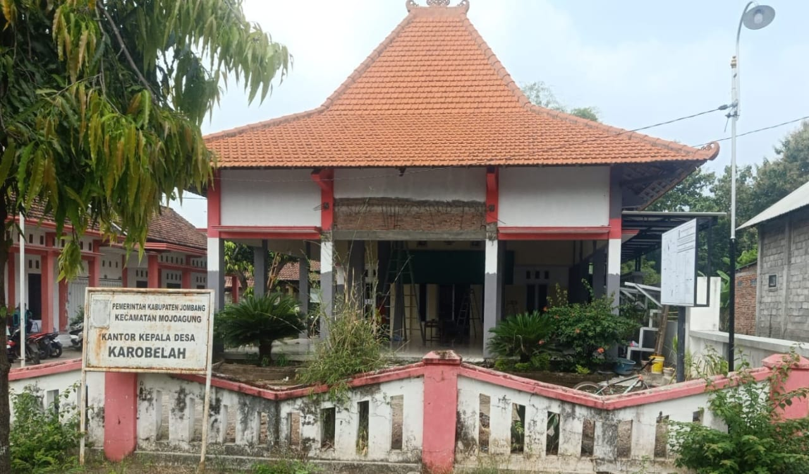

Mewujudkan desa mandiri melalui inovasi pertanian dan digitalisasi pelayanan publik demi kesejahteraan masyarakat Jombang.

Terletak di ujung timur Kabupaten Jombang, Karobelah memiliki kekayaan alam yang subur dan semangat gotong royong yang kental serta sebagai salah satu pusat sentra UMKM konveksi.5
Transparansi Anggaran
Pelayanan Publik
Pengurusan surat pengantar dan dokumen kependudukan lebih cepat lewat portal web.
Penyuluhan inovasi teknologi pertanian untuk meningkatkan hasil panen warga.
Platform digital untuk mempromosikan produk UMKM asli Desa Karobelah.
Kabupaten Jombang, Jawa Timur.
Email: info@karobelah.desa.id
2024 Karang Taruna Desa Karobelah (kartar_KRBLH).
Dibuat untuk kemajuan desa.